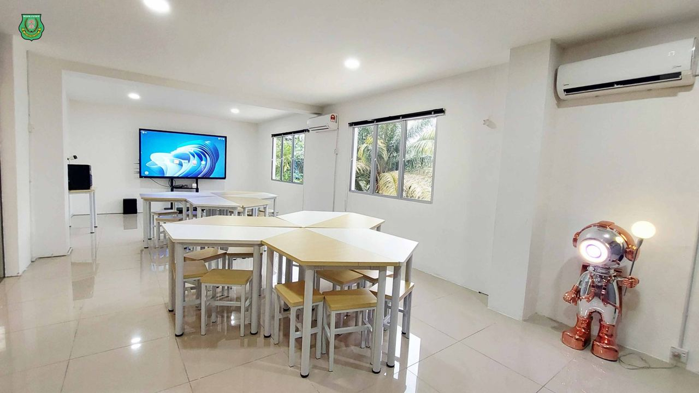
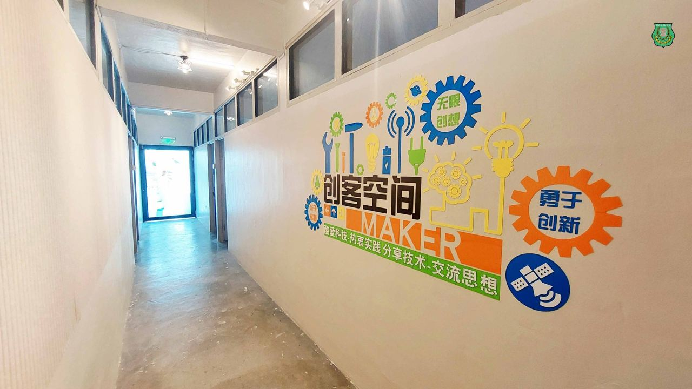
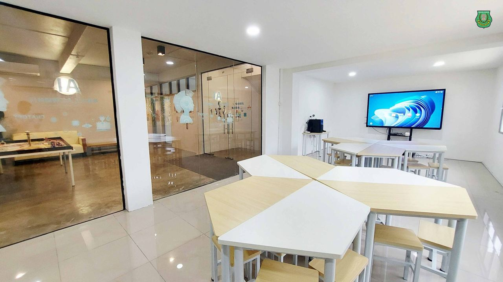
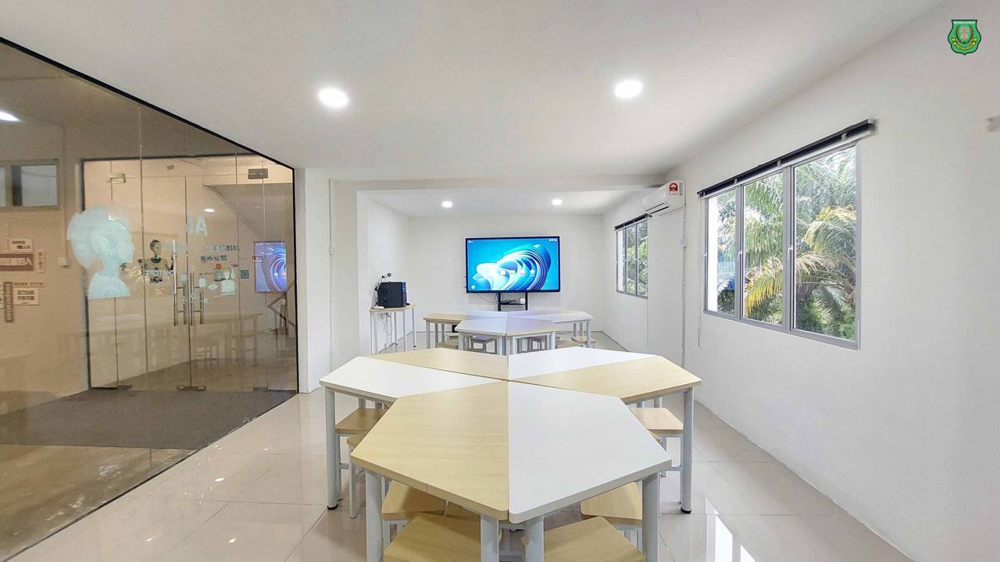
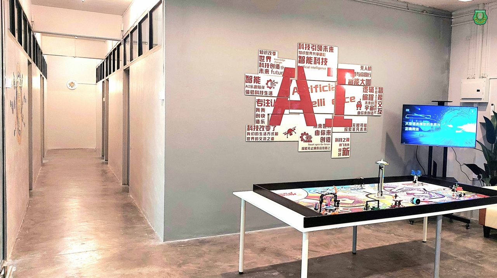
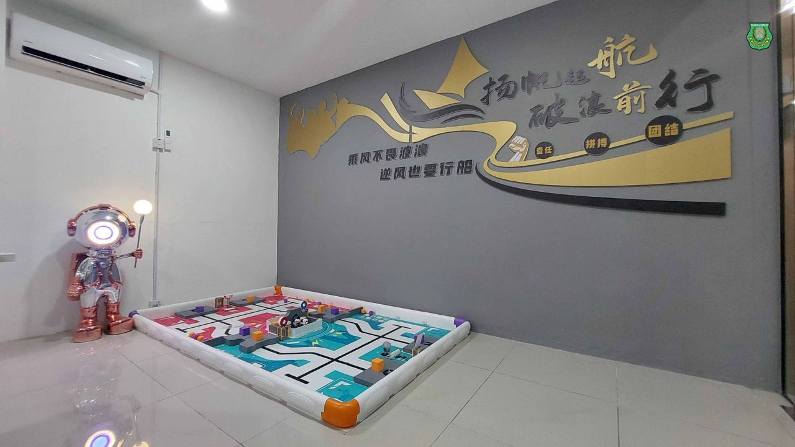
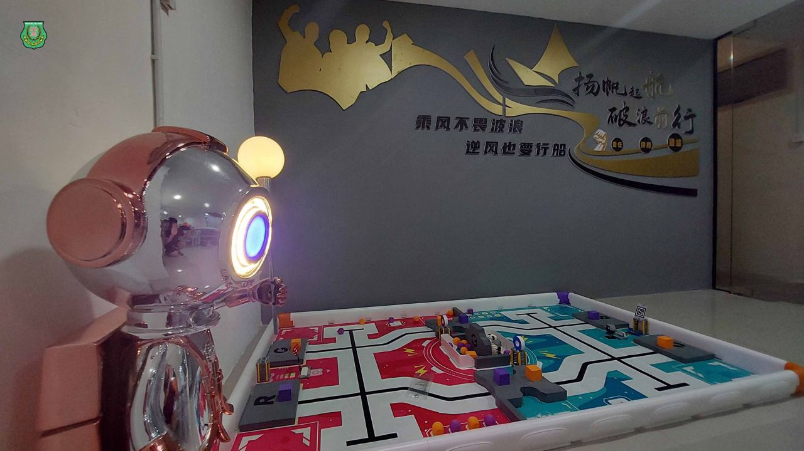

南华独中打造AI创客空间：
南华独中打造AI创客空间：
在温度与科技交汇处，培育未来掌舵人
AI技术迅猛发展的时代背景下，南华独中顺势而为，于2025年初正式启用“AI创客空间”，并正式将《AI教学与应用》纳入高一课程，为学生打造一个融合科技、创意与教育温度的全新学习场域。这里不仅是技术启蒙的摇篮，更是梦想起航的发射台，不让年轻学子在新兴浪潮中迷航，而是在师长的陪伴下远航科技汪洋。
#AI创客空间：未来教育的孵化基地
“AI创客空间”设于科技楼二楼，推门而入即是展示厅、开放式玻璃教室、灵活组合的六边形课桌以及复数的创客小间。处处设计都以“激发创意、促进协作、鼓励实验”为核心理念，致力营造师生共创、边学边试的环境。此外，AI创客空间也成了学生实验与试错的摇篮，科技的路从不平坦，而教育的意义，是允许不断试错，不断调整，直至找到那条专属自己的成功路径。
#AI课程亮点：从认知AI到创造AI
《AI教学与应用》课程涵盖人工智能的历史演进、核心分支（如机器学习、自然语言处理、深度学习）及实用工具训练。课程结构分为多个阶段，从基础知识入门，到文本与图像生成工具操作，再到AI在多学科中的整合应用。学生不仅要动手使用ChatGPT、文生图AI等工具生成故事、报告与图像，还需反思其伦理议题，例如AI是否应拥有决策权等，通过辩论、案例分析和跨学科任务加深理解。
真正让AI教学与应用体现价值之处在于，学生成功将各类的生成式AI应用在辅导其他科目的学习上 ，不仅使用语言大模型拆解与解读学科内容，更是借助图像、声音、影视等媒介，深化学习资料。
#多元学习与实践：从创意任务到项目展示
《AI教学与应用》课程的下半年将会聚焦在AI创客技术，落实生活中处处有科技的精神，学生将会以小组形式完成AI创作任务，如虚拟解说、智能教育助理或AI艺术展品、图像分析、虚拟实景技术等。最终成果将在即将来临的校园开放日中亮相。
“我们要打造的不只是一个科技空间，更是一种教育文化。”负责教学的林子策老师如是说。“我们希望让学生明白：失败不是终点，而是通往理解与突破的过程。AI只是工具，成长才是真实的目的。”在课堂中，学生被鼓励提出大胆想法、实验不同策略、公开展示阶段性成果；每一个“做不到”背后，老师与同侪都成为最温柔的后盾与镜子，照见彼此的进步。AI创客空间成功提供学生将想法化为现实的舞台，也让他们在众人的掌声与建议中累积自信。
#未来教育愿景：打造AI素养与人文思辨兼具的未来公民
南华独中陈丽冰校长指出：“AI创客空间的创设不是一场教学改革的终点，而是另一段教育旅程的起点。” 透过这门课程，希望在学生心中种下一颗不畏失败、乐于尝试、敢于怀疑也勇于创造的种子。这里，不只是编程或图像生成的场所，更是一方容许青年人“从失败中自我定义成功”的成长舞台。有温度的教育，不应止步于知识传授，而是陪伴与点灯，扶持每一位孩子在AI浪潮中稳健航行，驶向属于自己的星辰大海。







